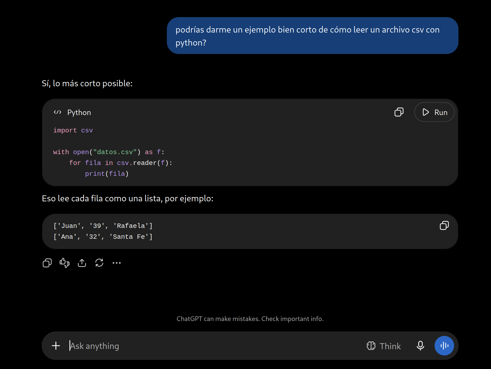
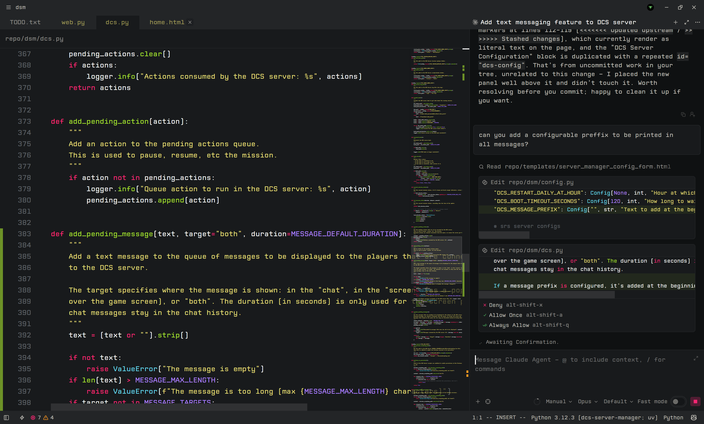
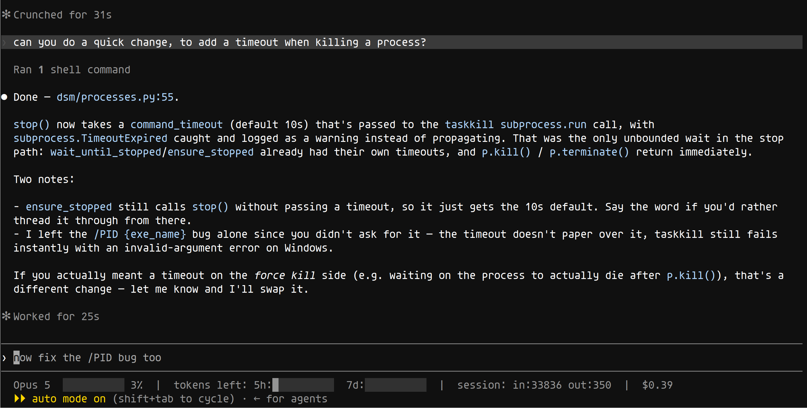
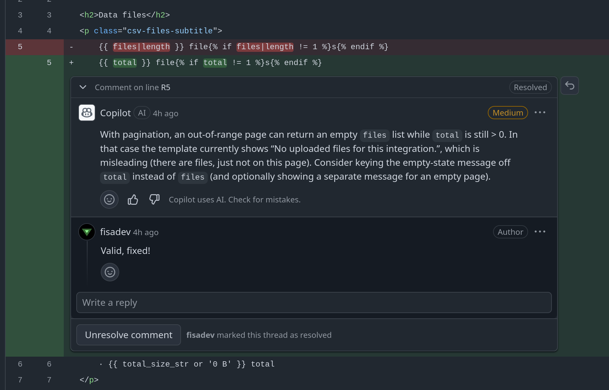

Herramientas de Desarrollo Modernas
Tópicos Avanzados de Programación

Entendiendo Git
(finalmente)
Todos usamos git, y mucho.
Quién tuvo problemas con Git alguna vez?
Entendemos qué es un commit? Y un branch? Y un rebase?
Muchos de los problemas pasan por no entender esas cosas.
No vamos a hacer un tutorial de Git. Asumimos que saben lo básico a esta altura.
Vamos a entender cómo funciona, para que lo sepan usar mejor.

Commit
Foto de los archivos del repo + metadata.
Qué guarda un commit?
- No guarda un diff!
- Archivos modificados: nueva copia del archivo.
- Archivos sin cambios: reusa link al existente.
Dónde se guarda?
Base de datos de grafos inmutables!
Es lo que hay dentro del directorio .git.
# commit inicial de nuestro repo
git add . # agregamos todos los archivos
git commit -m "commit inicial"

# creamos un nuevo commit modificando solo server.py
git commit -m "mejorado server" server.py

Es eficiente en uso de disco?
❌ Guarda N versiones (enteras) de cada archivo.
✅ Pero entre commits los archivos sin cambios no guardan nuevas copias.
✅ ...y además cada tanto se comprime el repo, reduciendo mucho la duplicación.
En la práctica termina siendo muy eficiente.
Y además eso hace que sea super rápido!
Ej: cómo obtenemos la versión X de un archivo?
En Git:
🏃♀️ Ir al commit, seguir las flechas, y llegamos al archivo tal cual lo queremos.
En versionado que guarde diffs:
🐢 Ir al commit inicial, y aplicar un montón de diffs hasta llegar a la versión deseada.
Y qué pasa con archivos grandes que cambian mucho?...
Un dataset de 100MB que actualizo seguido, una red neuronal entrenada, etc.
✅ Opción 1: no guardar en el repo!
✅ Opción 2: Git LFS, extensión que guarda esos archivos en otro lado (servidor de LFS), pero "parece" que están dentro del repo.

Branch
Una "versión" paralela donde puedo trabajar de manera independiente.
Cuántos branches hay en esta historia de commits?

No sabemos! No necesariamente 3.
❌ Un branch no es un conjunto de commits.
❌ Un branch no es una rama de commmits.
Un branch es un puntero a un commit, movible.
Si tenemos un branch "activo", al commitear se mueve el puntero.
# activamos el branch main
git switch main

# commiteamos teniendo "main" activo
git commit -m "mejorado server" server.py

# creamos un nuevo branch para trabajar en otra feature
git branch feature
# y activamos ese nuevo branch
git switch feature

# commiteamos teniendo "feature" activo
git commit -m "hecho async para mejor performance" server.py

# volvemos a main, hay que arreglar algo urgenge!
# (feature no está terminada, no queremos mezclarla con main)
git switch main
git commit -m "arreglado bug en server" server.py
git commit -m "arreglado otro bug más en server" server.py

# me piden que deje de trabajar en la feature,
# y me ponga a trabajar en estabilidad
git branch stability
git switch stability
git commit -m "hecho más estable" server.py


Por eso en este caso, no tenemos forma de saber cuántos branches hay :)
Bonus: podemos hacer que un branch apunte a lo que queramos...
# forzar a que un branch apunte a un commit específico
git branch -f BRANCH COMMIT
En general: no lo hagan!!

Tags
Nombres para versiones puntuales.
- Un branch es un tag que avanza solo.
- Un tag es un tag que no avanza solo.
- Nos sirven para referenciar versiones de nuestra app: v1.0, v2.1, ...
- A diferencia de un branch, no tenemos un "tag activo" que avance si commiteamos.
# activamos el branch main
git switch main

# creamos un tag
git tag v1.0

# commiteamos cambios
git commit -m "mejorado server" server.py

El tag v1.0 sigue apuntando al commit que le dijimos, no se mueve. El branch (main) es el que se mueve.

Merge
Traerme a un branch los cambios de otro branch.
Qué hace Git en un merge?
Ej: estoy en "main", y hago "git merge featureX"
- Busca el último punto en común entre main y featureX.
- Lista los commits entre el punto común y featureX, que main no tenga en su historia.
- Crea un nuevo commit en main condensando todos esos commits faltantes en uno solo.
- El nuevo commit apunta a los dos commits a los que los branches apuntaban antes.

# mergeamos a main lo que hay en featureX
git merge featureX


Un merge no es nada super loco que afecte a muchos commits ni a los branches de forma extraña:
Es solo un commit!
Deshacer un merge es una pavada: volver a apuntar al commit anterior y listo.
# des-hacer el último merge
git reset --hard HEAD^1
Merge: casos especiales
Caso 1: qué pasa si hacemos "merge featureX" desde main?

No hace falta un commit! Se hace un "fast forwards": se mueve main a apuntar a lo mismo que featureX.

Podemos forzar a que se haga un commit en vez con "git merge featureX --no-ff".
Caso 2: qué pasa si hacemos "merge featureX" desde main?

No hace falta nada! No hay commits que no tengamos ya.
Merge: conflictos
Un conflicto es un cambio a mergear que no tiene sentido en nuestro branch.
Ej: en main borramos una función. En featureX se le modificaron líneas. Hacemos merge de featureX a main: queremos modificar líneas que ya no existen! Git no puede saber qué hacer con eso.
No es una falla de Git. Es una contradicción que nosotros produjimos.
✅ Solución: le decimos a mano nosotros a Git cómo queremos que quede el archivo en el commit de Merge, y lo commiteamos.
Cómo evitamos conflictos?
✅ Haciendo merges frecuentes.
✅ Haciendo branches chicos.

Rebase
Mover commits de un lugar a otro.
Qué hace Git en un rebase?
Ej: estoy en "featureX", y hago "git rebase main"
- Busca el último punto en el que featureX se "separó" de main.
- Busca el commit actual de main.
- Por cada commit de featureX desde que se separó, crea un nuevo commit "igual", pero partiendo de main.
- Al terminar, apunta featureX al último de esos nuevos commits.

# estando parados en featureX,
# "rebaseamos" featureX sobre main
git rebase main


En menos palabras: mueve los commits para que partan desde un nuevo lugar.
Pero creando commits nuevos y olvidándose de los viejos (todo sigue siendo solo lectura).
Como con el merge, es fácil de deshacer: simplemente hacer que featureX vuelva a apuntar a su viejo commit (que sigue en el repo!).
Por qué haríamos un rebase?
Para actualizar nuestro branch: que tenga todo lo último de main por ejemplo.
...No se podría hacer lo mismo con merge?
Sí, pero la historia queda más entendible con rebase!
En palabras no es obvio, pero con un ejemplo se entiende :)
Merge vs Rebase
Ejemplo: trabajamos unos días en featureX que salió de main. Pero mientras tanto gente subió muchas otras cosas a main.
Ahora queremos probar nuestro trabajo en featureX pero incluyendo todo lo que hay en main.

Opción 1: con merge.
# parados en featureX, nos traemos lo nuevo de main
git merge main
# ahora featureX tiene todo lo de main que nos faltaba!
# probamos, arreglamos cosas que se rompieron al combinar todo
git commit -m "arreglados bugs al mergear main" server.py
# todo listo, lo mergeamos en main
git switch main
git merge featureX --no-ff # se suele hacer así


Opción 2: con rebase.
# parados en featureX, rebaseamos sobre main
git rebase main
# ahora featureX tiene todo lo de main que nos faltaba!
# probamos, arreglamos cosas que se rompieron al combinar todo
git commit -m "arreglados bugs al mergear main" server.py
# todo listo, lo mergeamos en main
git switch main
git merge featureX --no-ff # se suele hacer así


🚨CUIDADO!: rebase vs cambios pusheados.
Si hacemos rebase de un branch que ya pusheamos y alguien más lo bajó, se arma quilombo.
Nuestro branch featureX apunta a un commit con su historia, mientras que featureX en la PC de pepito apunta a otro commit con historia diferente!
Por lo general: no hacer rebase de branches pusheados que otra gente se bajó>.
Git Flow
Estandarizando la forma de usar branches.
- En qué branch trabajamos?
- En qué branch están las cosas estables?
- De dónde salen los branches de "feature X"?
Hay muchas formas de organizarse, pero hay un par de patrones que se usan mucho.
Git Flow es el más popular.
Branches de Git Flow:
- Main: estable, siempre deployable, "production ready".
- Develop: donde se hace el desarrollo, puede estar inestable.
- FeatureX: para trabajar en features, salen de develop y se mergean a develop (rebase o no).
- ReleaseX: para preparar un release, salen de develop y se mergean a main y develop.
- HotfixX: para arreglar bugs en producción, salen de main y se mergean a main y develop.

Pull Requests y Reviews
🧙♂️ YOU SHALL NOT PASS
Hoy es estándar en la industria:
- No mergear directamente a main o develop.
- Hacer un PR (pull request) o MR (merge request) para que alguien revise los cambios.
- Requerir al menos un approve (o más?) del PR para poder mergear los cambios.
- Al tener los approves, mergeamos desde GitHub/GitLab/etc mismo, no a mano.
Pero... por qué?
✅ Ayuda a encontrar problemas temprano.
✅ Ayuda a repartir ownership!: ya no más "solo pepito vió esto".
✅ Ayuda a transmitir conocimiento a gente nueva: revisando PRs ven cómo trabajamos, haciéndoles reviews los ayudamos a mejorar.
Algunos desafíos...
🚩 Lleva tiempo y esfuerzo.
🚩 No caer en dar approves "para sacármelo de encima", es inútil.
🚩 Requiere saber dar feedback respetuosa/amistosamente. No todos somos buenos en eso.
🚩 Requiere saber recibir feedback. No todos somos buenos en eso.

En empresas de tech muy serias, hacer buenas reviews es tanto o más importante que escribir buen código.
🧑🤝🧑 Hacer crecer a otros es mucho más valioso y productivo que hacer todo uno mismo.
🤖 Y en la era de IA escribiendo código, saber revisarlo es muy valioso también.
Y ya que hablamos de prácticas modernas, veamos algunas cosas relacionadas!
CI / CD / TDD
Automatizando la calidad y deployments.
Repaso: unit tests
Tests ejecutables que prueban cada parte de nuestro código.
Repaso: por qué son importantes?
- Nos ayudan a encontrar bugs en nuestro código.
- Nos ayudan a evitar romper cosas al hacer cambios.
- Nos ayudan a documentar cómo usar nuestro código.
Hoy no es aceptable no tener unit tests (no hace falta 100% de coverage).
Asumimos que nuestro proyecto tiene:
✅ Una batería de tests unitarios ejecutables.
✅ Con razonable "coverage".
✅ Actualizados.
→ Les confiamos: si pasan, no rompimos nada.
Pero además de tests unitarios, hay más que podemos automatizar:
- Linting: estilo de código.
- Type checking: tipos de variables.
- Bugs: herramientas que detectan bugs comunes.
- Seguridad: herramientas que detectan vulnerabilidades automáticamente.
→ Hoy es estándar usar esas herramientas.
Pero cómo/dónde ejecutamos todo eso?
No podemos depender de que cada dev lo haga en su máquina, porque no todos lo harán.
✅ Solución: CI! (Continuous Integration)
CI
Automatizar la ejecución de tests y otras herramientas de calidad.
Además de poder correr los tests + resto de herramientas en nuestra máquina mientras desarrollamos, hoy es estándar que corran...
...en cada PR: si no pasan, no se puede mergear!
→ Así nos aseguramos de que no mergeamos a develop/main cosas rotas.
...en cada merge a main o develop.
→ Así nos enteramos rápido si por alguna razón igual rompimos develop o main.
Si tenemos esas seguridades... podemos confiar en que las cosas se deployen solas?
→ CD! (Continuous Deployments)

CD
Automatizar el deploy de nuestra app.
Qué es "automatizar" deploys? Hay dos aspectos muy diferentes:
- Que el proceso de deploy no requiera intervención humana (ej: "un click", "correr un comando", y listo).
- Que la decisión de cuándo deployar pueda tomarse automáticamente (ej: si los tests pasaron, develop se deploya solo).
✅ Que el proceso esté automatizado hoy es una práctica estándar y básica.
🚀 CD se refiere a lo segundo: que la decisión de cuándo deployar sea automática.
🚀 Cuándo deployarían automáticamente y a qué entornos?
Hoy hay muchos niveles/opciones!
🚀 Al mergear a develop: deploy automático a un entorno de "dev".
- Esto es muy estándar y muy usado.
- Sobre todo útil para que devs puedan probar la última versión con todo lo nuevo en un entorno realista.
🚀 Al crear un PR o agregarle cambios: deploy automático a un entorno efímero solo para ese PR.
- Esto es menos común por el costo.
- Sobre todo útil para que los devs puedan probar cosas antes de mergear a develop: sin terminar, dudas de si funciona, etc.
- Evita usar el entorno de dev para probar cosas quizás rotas, complicándole la vida al resto.
🚀 Al mergear a main: deploy automático a un entorno de "staging".
- Esto es bastante estándar también.
- Sobre todo útil para que QA pueda probar cosas antes de que se deployen a prod, en un entorno más estable que dev.
- "v12.5 ya está en staging! QA puede probar, si anda bien, la deployamos a prod"
🚀 Al mergear a main: deploy automático a prod.
😱
- Esto se hace en algunas empresas, pero es menos común.
- La confianza en los unit tests + herramientas automáticas tiene que ser altísima.
- Mergear a main pasa a ser algo mucho más delicado!
- Suele implicar que no hay QA manual, o que se hace antes de que las cosas lleguen a main.
Una forma de reducir el riesgo de los deploys automáticos a prod: canary releases! 🐤
- Esto es bastante común.
- ✅ Se deploya a un pequeño porcentaje de usuarios/servidores, y si todo anda bien, se va aumentando el porcentaje.
- ❌ Si algo anda mal, se corta el deploy y se vuelve a la versión anterior.
IA en el desarrollo
🗨 Hay mucho hype, debate, exageración, negación, e incertidumbre alrededor de la IA en el desarrollo de software.
Pero ya es innegable su utilidad y que está transformando la profesión.
Algunos hechos:
✅ Las empresas lo requieren/fomentan/prefieren.
✅ La diferencia en productividad es grande, ya no se puede ignorar.
✅ Y también hay diferencias grandes entre quienes saben usarlas bien y quienes no (qué es "bien"??).
Algunas dudas:
❔ Rentabilidad/sostenibilidad del uso actual.
❔ Cómo es el futuro de nuestra profesión.
❔ Impacto en habilidades de devs, y si importa.
Hay muchísimo para debatir, pero nos vamos a enfocar en prácticas actuales de desarrollo con IA.
Web chatbots
Copiar y pegar desde ChatGPT en la web, Gemini, etc.

No son "inútiles", pero son definitivamente subóptimos como herramienta de desarrollo.
❌ Fuertísima falta de contexto → malos resultados! (no ven tu repo, no corren tu código/tests, no usan tools que tenés instaladas, etc).
❌ Flujo de trabajo muy limitado y tosco (copiar, pegar, scroll, sin versionado ni diffs, 100% human-in-the-loop).
✅ Sí útiles para discutir ideas, pedir ejemplos de libs, preguntar conocimiento general.

En el editor/IDE
Lo más básico.
Hay dos formas de usar IA en casi todo editor moderno, usen alguno que lo tenga (nativo o plugins!):
- Autocomplete.
- Chat integrado.
Ambas mucho más naturales y poderosas que copiar/pegar en un chat web!

✅ Pueden leer y correr tu código, tests, linters, validar, probar cosas, usar herramientas, etc.
✅ Flujo de desarrollo: ver el diff de cambios, aceptarlos o no, hacer commits, y modos autónomos!!
✅ Y se sigue pudiendo charlar como si fuese un web chatbot, pero ahora con más contexto y habilidades!
Asumimos que ya lo están usando :) Pero consejos:
- No confiar ciegamente, todavía hacen cosas mal: revisar, entender, y modificar si hace falta.
- Vos sos owner de lo que commiteas, no la IA: si algo rompe, es tu responsabilidad.
- Si estás aprendiendo algo: escribir vos el código te ayuda a entenderlo mejor. Take it or leave it.
Agentes que codean
Claude Code, etc.

Casi lo mismo que el chat dentro de los editores. Mismas ventajas y consejos.
Pero en general, con un flujo de trabajo más "desatendido" y menos orientado a tocar nosotros el código.
✅❌ Eso es una ventaja y una desventaja al mismo tiempo: +automatización, +paralelizar trabajo, -control, -aprender, entre otras cosas.
Y algunos también pueden usarse desde la web integrados en otras apps!
Ej: desde Linear (sistema de tickets) decirle a @Claude "programame este ticket", y al rato nos responde con un link a un PR.
😎
Cómo? Claude usó un sandbox en sus servidores, donde clonó el repo y trabajó por un rato hasta mandar el PR.
Agentes que revisan
Reviews automatizadas en PRs (by Claude, Copilot, Codex, etc).

Automáticamente o a demanda, una IA puede revisar cada PR y dar feedback.
Hoy es muy usado en empresas!
✅ Útil sobre todo para encontrar problemas, bugs, smells, cosas mejorables.
✅ No es reemplazo de reviews humanas! (por las ventajas de ownership y aprendizaje).
✅ Increíblemente metódicos y con mucho contexto en "la cabeza".
❌ A veces se pueden poner "intensos" con detalles innecesarios → saber decirles que no.
Ayudas en el repo
Potenciando a los editores y agentes que codean y revisan.
Hay cosas que podemos hacer en nuestros repos que potencian mucho las capacidades de las herramientas que vimos.
🤖 Ya no escribimos código y docs solo para nosotros, ahora también para agentes que usen el repo!
AGENTS.md y similares (CLAUDE.md, etc).
🧑🤝🧑Todo repo tiene un README.md en la raíz, con la ayuda básica para humanos.
🤖 El AGENTS.md agrega info para agentes, que por default van a leer cuando trabajen en nuestro repo.
Un buen AGENTS.md puede simplificar mucho el uso de agentes:
✅ Qué herramientas, libs, frameworks, puede usar, cómo ejecutar las cosas necesarias.
✅ Convenciones, criterios, costumbres de nuestro equipo, para no repetirle mil veces "mejor hacelo de tal forma".
✅ Qué cosas nos interesa que mire (o no mire!) en las reviews, con qué nivel de detalle, etc.
✅ Arquitectura general, dónde poner/buscar cada cosa, dónde leer más docs.
Skills (.claude/skills, .github/skills, etc).
❌ El AGENTS.md no puede tener miles de instrucciones detalladas de cómo hacer todo, es un resumen.
✅ Para instrucciones detalladas creamos skills: archivos explicando cómo hacer cosas específicas más complejas.
Skill de ejemplo:
.claude/skills/debug_prod_error/SKILL.md
En el archivo describimos todo lo que le recomendamos hacer al agente para debuguear un error en producción:
- Qué logs mirar, cómo filtrarlos, qué buscar.
- Qué herramientas usar, cómo ejecutarlas, qué mirar en cada una.
- Qué cosas probar, cómo probarlas, qué resultados esperar.
- Qué cosas NO probar, para no perder tiempo.
Luego desde Claude Code:
a las 14:05 hubo un error raro en prod,
debuguealo, decime qué pasó y cómo arreglarlo
😎
Y docs en general.
Si tenemos buena doc en nuestro repo, eso puede ayudar muchísimo a los agentes.
Tienen capacidad de leer mucho más que nosotros! Escriban sin miedo, mucho y detallado.
Hasta acá un agente puede leer del repo y usar herramientas en nuestra máquina.
Super útil. Pero tiene límites:
- Cómo lee los logs de prod?
- Cómo busca info en tickets o chats sobre fallos anteriores?
- Cómo reinicia un servicio en prod que se colgó?
Todo eso se resuelve con MCPs!

MCPs
Poderes nuevos para los agentes.
Los MCPs son APIs para agentes: el agente las puede usar para lograr cosas. Ej:
🛠 Con el MCP de DataDog puede leer logs de prod.
🛠 Con el MCP de Jira Linear puede leer los tickets.
🛠 Con el MCP de Slack lee los chats.
🛠 Con el MCP de AWS puede manipular infra.
Cómo funcionan?
Por dentro son simplemente APIs web.
... con un único endpoint (con parámetros para decirle qué herramienta llamar).
... con un formato estándar para listar herramientas y llamarlas.
... y un formato estándar para darle info al agente sobre cómo usarlas.
Cómo agregamos un MCP?
Depende del agente que estamos usando, pero en general es una pavada.
(suele ser correr un comando o configurar una url).
Resumiendo
Con un agente local (dentro o fuera del editor)
+ un repo bien preparado (AGENTS.md, skills, docs)
+ un buen set de MCPs conectados
→ podemos hacer cosas muy poderosas con IA en el desarrollo!
Y qué pasa con ustedes como devs?
- Los va a reemplazar / dejar sin trabajo?
- Ayuda o impide aprender?
- Vibecodear al 100% como profesión?